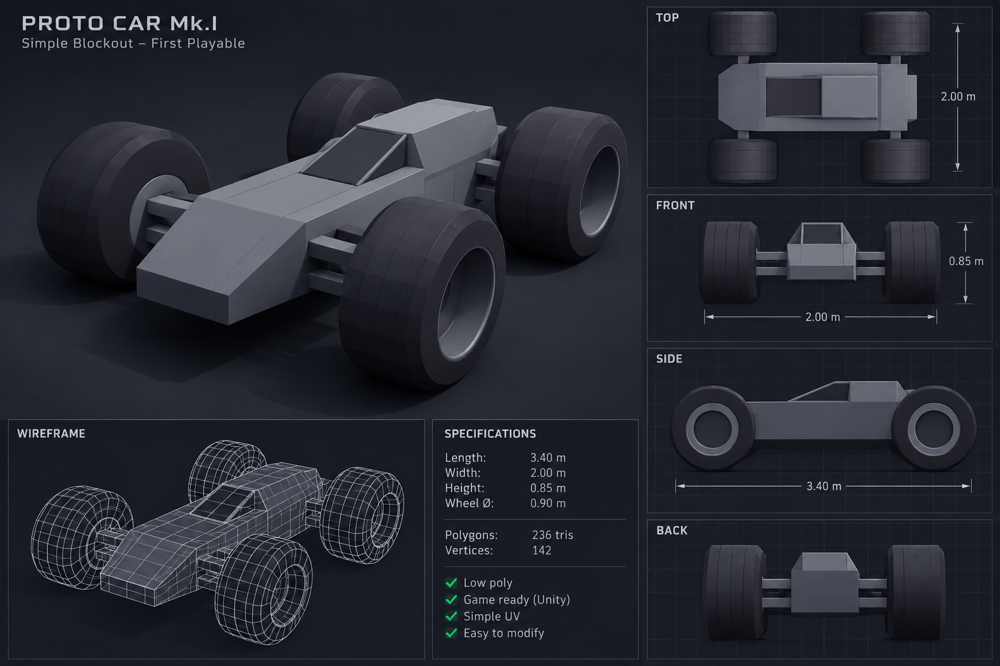

PROTOTYP • VE VÝVOJI
MOVE
VECTOR
Jednoduchá low-poly závodní hra zaměřená na rychlost, ovládání a čistou zábavu.

PCPlatforma
LOW POLYStyl
ALPHAStav projektu
UNITYEngine
O HŘE
Jednoduchý základ.
Prostor pro pořádnou jízdu.
MoveVector je malý herní projekt postavený kolem jednoduchého vozidla, fyziky a tratí. Cílem je postupně z prototypu udělat svižnou arkádovou hru s vlastní atmosférou.
PROTO CAR MK.I
První hratelné vozidlo
Low-poly model připravený pro první testy ovládání, fyziky, kolizí a jízdního modelu.
DOWNLOAD
První verze už brzy.
Až bude build připravený, stačí sem vložit odkaz na ZIP nebo release z GitHubu.
Zatím není ke stažení